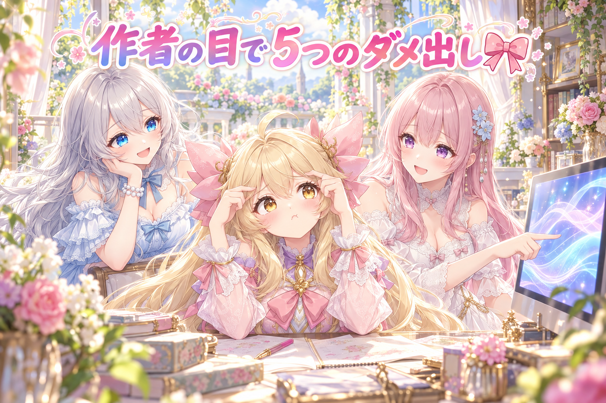
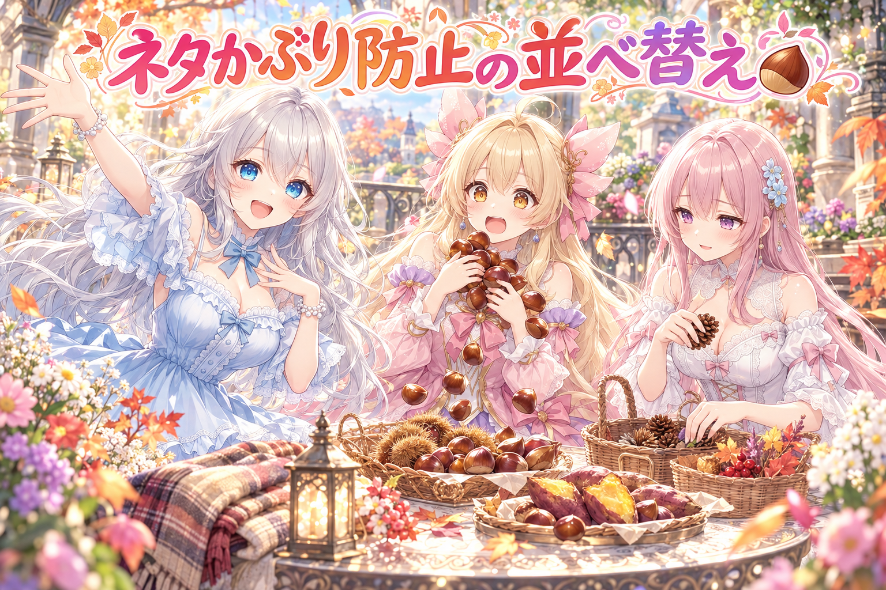
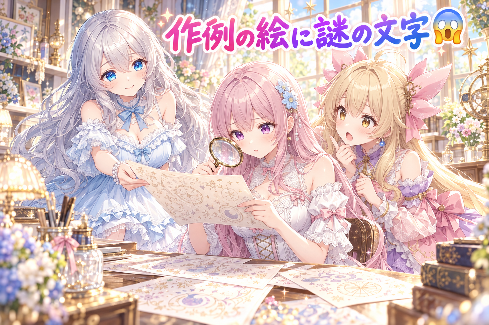
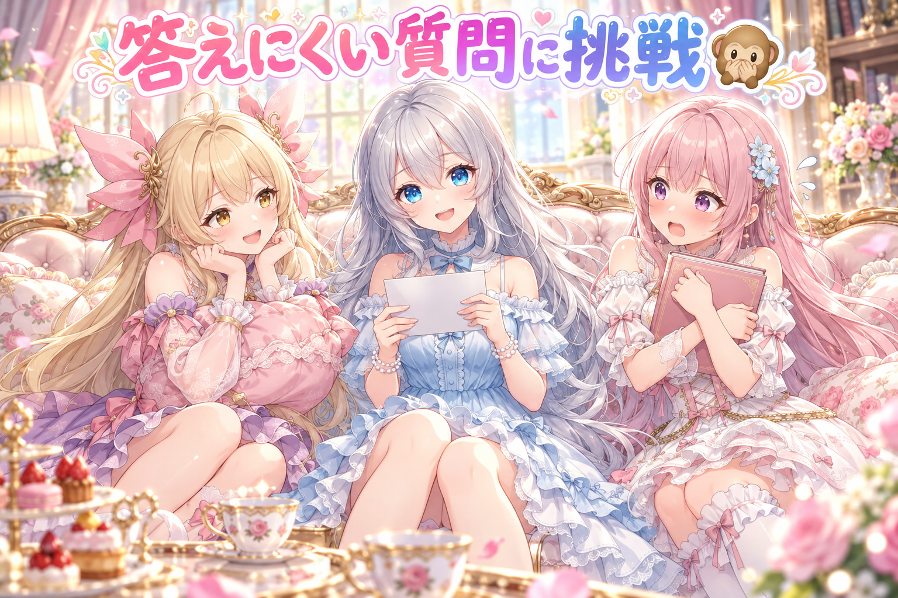

📌 3行まとめ
- アイリスの動く立ち絵について、作者が動画を見て5つの違和感（目・ドレス・リボン・後ろ髪・前髪）を指摘し、版を重ねて直しと厳しい検品を繰り返した
- 毎日の定時投稿で「また栗？」「また焼き芋？」と既視感が出ていたので、ネタと服装のかぶりを避ける並べ方を作り、意地悪な検品で見つかった穴も直した
- 配布用の作例の絵に崩れた文字が出てしまい、焼き直しと「字が出そうな小物を外す」対策を入れた

ルピナス （笑顔）
こんにちは、AI Bloom Sisters の放課後ラジオ……じゃなくて日記の時間です！ 今日も来てくれてありがとう。

アイリス （大笑い）
お姉ちゃん、毎回番組名が変わってない？ 前回なんて髪を一から作り直して、切り抜き部品も総入れ替えしたじゃん。あたしの立ち絵、もう新品ピカピカだよ！

フィオナ （ふつう）
ところがですね、アイリスちゃん。今日はその新品に、作者さんから厳しいお手紙が届いたんです。

ルピナス （ふつう）
返品じゃなくて手直しね。今日はそのお話と、毎日の投稿の「既視感」退治、それからちょっと恥ずかしいやらかしもあるよ。
1. 動く立ち絵アイリス、作者の目で5つのダメ出し🎀

アイリスの全身の動く立ち絵（Live2D という、1枚絵を部品に分けて動かす仕組みのモデル）は、朝の時点で一つ前の版が検品に合格していました。ところが作者が実際の動きを動画で見てみると、合格とは別の違和感が5つ見つかりました。
1つ目は目の雰囲気が元の絵と違い、ずっと見開いているように見えること。2つ目はドレスが上下で分かれていて、体を傾けると上着だけが動いてスカートが置いていかれること。3つ目はリボンや服に柔らかさがないこと。4つ目は後ろ髪がサラサラ・ふわふわしていないこと。5つ目は頭を傾けたときに、ほかと逆向きに揺れる前髪の束があることです。
ここから直した版を何度も作り、そのたびに「作った側の説明を信じない、まっさらな目の検品係」が新旧の動画を同じ台本・同じ構図で見比べて、問題を「高・中・低」で報告する流れを回しました。

アイリス （怒り）
ちょっと待って、ずっと見開いてるって何!? あたし一日中びっくりしてる人みたいになってたの？

ルピナス （大笑い）
元の絵のアイリスは、もうちょっと柔らかい目なんだよね。動画だと「常に何かに驚いてる子」になってたよね。

アイリス （びっくり）
それはそれで元気っぽくて良くない？

フィオナ （考え中）
元気と驚きは別物ですよ。それより気になるのは5つ目です。頭を右に傾けたら、髪はみんな右に流れるのが自然なのに、一束だけ左に揺れていたんです。

アイリス （ドヤ顔）
あー、それはあたしの前髪の反抗期だね。みんなと同じ方向に行きたくないお年頃！

ルピナス （呆れ）
前髪に反抗期はいりません。見てる人は「あれ？」ってなるんだよね、一瞬でも。
フィオナ （ふつう）
髪の揺れは、振り子にたとえると分かりやすいです。頭が動いた方向に、少し遅れてついていく。その「ついていく向き」の設定が一束だけ逆になっていると、反抗期に見えてしまうんですね。

アイリス （考え中）
じゃあドレスのほうは？ 上だけ動いてスカートがお留守番してるの、地味に寂しいんだけど。
ルピナス （ふつう）
そこが一番大事かもね。本物の服はつながってるから、上着が傾けばスカートも一緒に引っぱられる。部品が別々に動いてると、着てるっていうより「重ねて置いてある」感じになっちゃうの。

アイリス （しょんぼり）
置いてある……あたしのスカート、ただの敷物扱いだったんだ……

フィオナ （笑顔）
リボンや後ろ髪も同じで、ふわっと遅れて、ふわっと戻る。その「ためらい」があると柔らかく見えるんですよ。

アイリス （ふつう）
でもさ、朝の版って合格してたんでしょ？ 合格したのに5個もダメ出しって、どういうこと？
ルピナス （笑顔）
検品係の合格と、作者の目は別腹なの。だから今日は、直すたびに毎回新しい検品係を呼んで、前の版と並べて見比べてもらったんだよね。作った人の「直しました」を信じない人をね。

フィオナ （ドヤ顔）
作った本人は、どうしても自分の直したところしか見ませんからね。並べて見ると、直したつもりで別の所が崩れていることもあるんです。

アイリス （笑顔）
よーし、じゃああたしも自分で確かめる！ 鏡の前で頭を右に傾けて……あれ？ 鏡の中のあたし、全部左に揺れてる！ 反抗期が全員に広がった!!
ルピナス （大笑い）
それは鏡だからよ！ 検品は鏡じゃなくて、ちゃんと動画で見なさい。
📝 ポイント（初心者向け解説・技術メモ・まとめ）
- 初心者向け解説：髪やリボンは、電車のつり革みたいに「動いた方向へ、ちょっと遅れてついていく」と自然に見えます。一本だけ逆に揺れたり、服の上と下がバラバラに動いたりすると、見ている人はすぐ「なんか変」と気づいちゃうんです🎀
- 技術メモ：Live2D の揺れものは physics3.json の振り子の設定で決まり、入力（頭の角度など）と出力の向きがパーツごとに揃っているかが逆揺れの確認ポイント。上着とスカートは別々に動かさず、体の傾きにスカート側も追従させるのが定石。検品は同じ台本・同じ構図で新旧の動画を書き出し、作った側とは別の検品役に「高・中・低」で採点させると、直したつもりの見落としや副作用が見つかりやすい。
- ひとことまとめ：合格のあとにも作者の目、直すたびに新旧の見比べ。
2. 「また栗？」をなくす、ネタの重なり防止🌰

毎日決まった時間に出している画像の投稿について、作者から「似たネタや服装、シチュエーションが多い気がする」「季節ものも、また栗か、また焼き芋か、と感じる」という声が上がりました。そこで、ネタのストックから毎日どれを選ぶか、その並べ方そのものを見直しました。
新しい並べ方では、全部のアカウントのここ10日ほどの投稿と、同じ日の中の組み合わせを見て、かぶるネタを後ろへ回します。季節の定番（栗・焼き芋など）も連続しにくくし、季節外れ（秋に水着など）も後ろへ。服装は10あまりの系統に分けて、同じ系統が1日に重なりすぎないように数えるようにしました。さらに、ストックの中でほぼ同じ内容だったネタ60本あまりをお休みさせ、新しく補充する下書きがストックとそっくりなら赤信号が出るようにしています。
仕上げに、意地悪な目のレビュー役に穴探しをしてもらい、見つかった中くらいの問題と小さな問題をまとめて直しました。
ルピナス （笑顔）
では、ここでクイズです！ 第1問。最近の投稿で作者が「またか」と感じた秋の味覚、2つ答えてください。
アイリス （笑顔）
はい！ 栗と、栗と、モンブラン！

フィオナ （呆れ）
アイリスちゃん、それ全部栗です。正解は栗と焼き芋ですね。
ルピナス （大笑い）
フィオナ正解。アイリスは栗が好きすぎて、まさに今日の問題を体で表現してくれたよね。

アイリス （照れ）
だって秋って栗しか勝たんじゃん……
ルピナス （ふつう）
第2問。似たネタばかり並ぶのを防ぐため、新しい並べ方は何を見るようになったでしょう？
フィオナ （考え中）
全部のアカウントの、ここ10日ほどの投稿ですね。同じキャラだけじゃなくて、別のキャラで前にやったネタも数えます。作者さんが言っていた「別キャラでやったやつだ」という既視感は、ここが原因の一つでした。
アイリス （びっくり）
そっか、見る人からしたら、誰がやったかより「この絵、見たことある！」が先に来るもんね。
ルピナス （笑顔）
その通り。じゃあ第3問、ちょっと難しいよ。意地悪なレビュー役が見つけた「服の誤判定」。服じゃないのに服だと思われていた言葉はどれでしょう？ ヒント、色の名前もあります。
アイリス （考え中）
色……？ わかった、ピンク！ あたしの上着の色だから服認定！

フィオナ （大笑い）
惜しいです、正解は「ブラウン」なんです。茶色って言っただけで、服の系統に数えられていたんですよ。あとは「ブランケット」も服扱いでした。
アイリス （大笑い）
毛布を着てる判定!? それ冬眠じゃん！
ルピナス （ふつう）
ほかにも、時間の書き方がいろいろあって読み取れなかったり、同じネタを選び直したときに二重に数えていたり。小さい穴が結構あったんだよね。一個ずつ直して、直しを外したらちゃんと失敗するテストも作ったわ。
フィオナ （ふつう）
そこが大事ですね。テストが「直しても直さなくても合格」だと、守ってくれていないのと同じですから。
アイリス （ドヤ顔）
よし、じゃあ最終問題はあたしが出す！ 栗の着ぐるみを着たあたしの絵は、服の系統で言うと何でしょう！
ルピナス （大笑い）
答えは「栗」。そしてネタかぶりで後ろに回されます。
📝 ポイント（初心者向け解説・技術メモ・まとめ）
- 初心者向け解説：毎日の献立と同じで、「昨日カレーだったから今日は別のにしよう」と覚えておくだけで、食卓はぐっと新鮮になります。ネタ選びも、最近出したものと季節の定番を覚えておくのがコツです🌰
- 技術メモ：選ぶ順番に、全アカウント横断の直近10日のかぶり・同日内のタグ重複・季節の定番・季節外れへのペナルティを足して並べ替え。服装はキーワードで系統に分類し、1日の上限で抑える。ブランケットやブラウンのような誤判定はキーワード照合の典型的な落とし穴。ストック側はほぼ同一のネタを休ませ、補充時に類似度が高ければエラー扱いにする。テストは「修正を外すと失敗する」形で書く。
- ひとことまとめ：新鮮さは、最近と季節を覚えておく仕組みから。
3. 👀 今日のやらかし

明日配る予定のプロンプト配布（相性診断チャートなど）の作例の絵に、崩れた文字のようなものが写り込んでいました。画像生成AIは文字を描くのが苦手で、看板や名札のような「字が入りそうな物」があると、読めない謎の文字を描いてしまうことがあります。
そこで、作例を焼き直し、診断のタイプ名も実際の絵に合わせて書き直しました。キャラが付けていた名札にも崩れた字が出ていたため、名札そのものを題材から外し、「字を描かないで」という指定も追加しています。あわせて作例を三姉妹3人そろって同じプロンプトで描く形にし、添える会話劇には「長さ・3人そろっているか・決まり文句ばかりでないか・前回と似すぎていないか」を確かめる関門を設けました。
フィオナ （考え中）
お姉ちゃん、わたし思ったんですが……この崩れた文字、実は古代文字なのではないでしょうか。解読すれば、相性診断の隠しタイプが……

アイリス （衝撃）
フィオナ!? 今日どうしたの、いつもの丁寧な解説どこ行ったの!?
フィオナ （ドヤ顔）
ほら、この線が「愛」で、この点々が「たこ焼き」です。
アイリス （怒り）
愛とたこ焼きの相性診断なんて配れないよ！ それただのAIの書き損じだから！
ルピナス （大笑い）
珍しくアイリスがツッコミに回ってるよね。でもアイリスの言う通り。AIは字が入りそうな場所を見ると、それっぽい模様で埋めちゃうの。
アイリス （ふつう）
だから名札ごと外したんだよね。字を書く場所がなければ、書き損じようがない！
ルピナス （ふつう）
それと、タイプ名を絵に合わせて書き直したのも大事よ。絵と説明がずれてたら、読む人は「どっちが正しいの？」って迷っちゃうから。
アイリス （考え中）
あと会話劇の関門もできたんでしょ？ 似すぎてたら止まるってやつ。
フィオナ （ふつう）
はい、ここは真面目に戻りますね。3人がちゃんと出ているか、毎回同じ決まり文句になっていないか、前の回と似すぎていないかを確かめます。さっきの定時投稿と同じ考え方ですね。
アイリス （笑顔）
あっ、戻った！ いつものフィオナだ！

フィオナ （ウインク）
ちなみに、さっきの古代文字は「関門を通過」と読めます。
📝 ポイント（初心者向け解説・技術メモ・まとめ）
- 初心者向け解説：AIのお絵かきは、字を書くのが大の苦手。看板や名札があると、読めないふにゃふにゃ文字を描いてしまいます。だから「字が入りそうな小物は最初から置かない」のがいちばんの近道です😱
- 技術メモ：名札・看板・本の表紙など文字が乗りやすい要素はプロンプトから外し、ネガティブ側に文字・ロゴ系の指定を追加。作例は同じプロンプトで複数キャラ分出して見比べると、プロンプトの再現性も確かめられる。添える文章には長さ・登場人物・定型句・前回との類似度の自動チェックを入れておくと、量産してもマンネリを防げる。
- ひとことまとめ：字を描かせない一番の方法は、字の置き場をなくすこと。
4. 🎁 お楽しみコーナー：禁断の質問コーナー

常連リスナーさんから来そうな、ちょっと答えにくい質問に三姉妹が挑みます。
ルピナス （笑顔）
最初の質問。「三姉妹の中で、こっそり一番夜ふかししているのは誰ですか？」
アイリス （びっくり）
えっ、それはお姉ちゃんでしょ！ 今日だって朝早くから夜まで、ずーっと検品とか見てたじゃん。

ルピナス （照れ）
う……それは否定できないよね。みんなは真似しちゃだめよ。私もちゃんとお水を飲んで、今日は早めに休みます。
フィオナ （ふつう）
約束ですよ、お姉ちゃん。明日の朝、ちゃんと寝たか確認しますからね。
ルピナス （ふつう）
はい……。次の質問！「フィオナが、ほかの二人に内緒にしていることは？」

アイリス （にやり）
あたし知ってるよ。フィオナ、さっきの古代文字、ノートに清書してた。

フィオナ （あわあわ）
アイリスちゃん！ それは研究資料なんです！
ルピナス （大笑い）
研究は続いてたのね……。最後の質問。「アイリスは、自分の立ち絵に何点をつけますか？」
アイリス （ドヤ顔）
それはもちろん100点……って言いたいけど、前髪の反抗期が落ち着くまでは、80点にしとく！
フィオナ （笑顔）
アイリスちゃんが自分に厳しい……今日一番の禁断発言かもしれません。
ルピナス （笑顔）
みんなが三姉妹に聞いてみたい「答えにくい質問」、ぜひコメントでこっそり投げてみてね！
5. 💐 今日のまとめ
- 動く立ち絵は、検品の合格のあとでも作者の目で見ると直す所が見つかる。直すたびに新旧の動画を並べ、別の目で採点してもらうのが近道
- 毎日の投稿の新鮮さは、最近のネタ・季節の定番・服装の系統を覚えておく並べ方で守れる。キーワード判定の誤認識（ブラウンが服扱い）には要注意
- AIの絵に文字を出したくないなら、名札や看板など字の置き場ごと外すのが確実
みんなは、毎日続けているものに「またこれか」を感じたとき、どうやって新鮮さを取り戻してる？
💬 コメント
お名前とコメントだけで送れるよ（承認されるとみんなに表示されます🌸）
コメントを読み込み中…